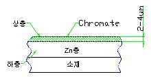

아연 CHROMATE 도금
|
1. 개 요 |
아연도금의 일부를 용해시켜 크롬산을 주성분으로 하는 혼산에 금속을 침지시켜 내식성 피막을 만들어주는 처리 |
||||||||||||
|
2. 특 징 |
- 내식성이 우수하다(국방색 chromate 처리가 가장 우수) - 광택이 있고 외관이 미려(피막의 밀착성 양호) - 내마모성 및 경도는 약하다 - 처리 가능한 금속 다양함(황동, 구리, 은, 주석, 알루미늄 등) - 다양한 착색가능(백색, 국방색, 무지개색, 흑색 등) |
||||||||||||
|
3. 참 고 |
※ 도금층의 구조 및 특성 주) 5㎛이상 도금 필요 
※ 유색 chromate : 방식용 chromate라 하며 국방색, 무지개색등이 있음 광택 chromate : 아연에 대해 방색피막을 생성하며 화학연마작용 ⇒ 광택
|
||||||||||||
|
5. 가 격 |
백색 350원/㎏ 유색 450원/㎏ |